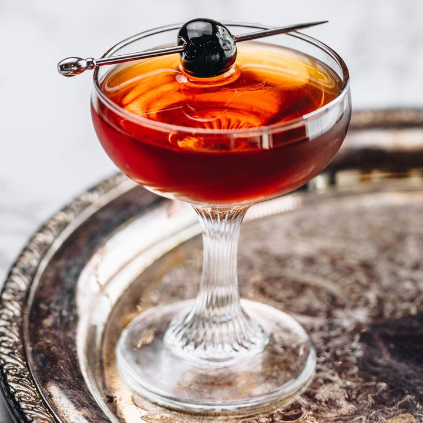

Manhattan

Description
Ingredients
- Bourbon of choice
- Sweet Vermouth
- Amaro, not necessary
- Angostura Bitters
- Luxardo Cherry
Steps
- Pour equal parts bourbon and sweet vermouth (If using Amaro, pour equal
equal amount of Amaro, as well)
- 3 dashes of bitters
- Add Luxardo cherry